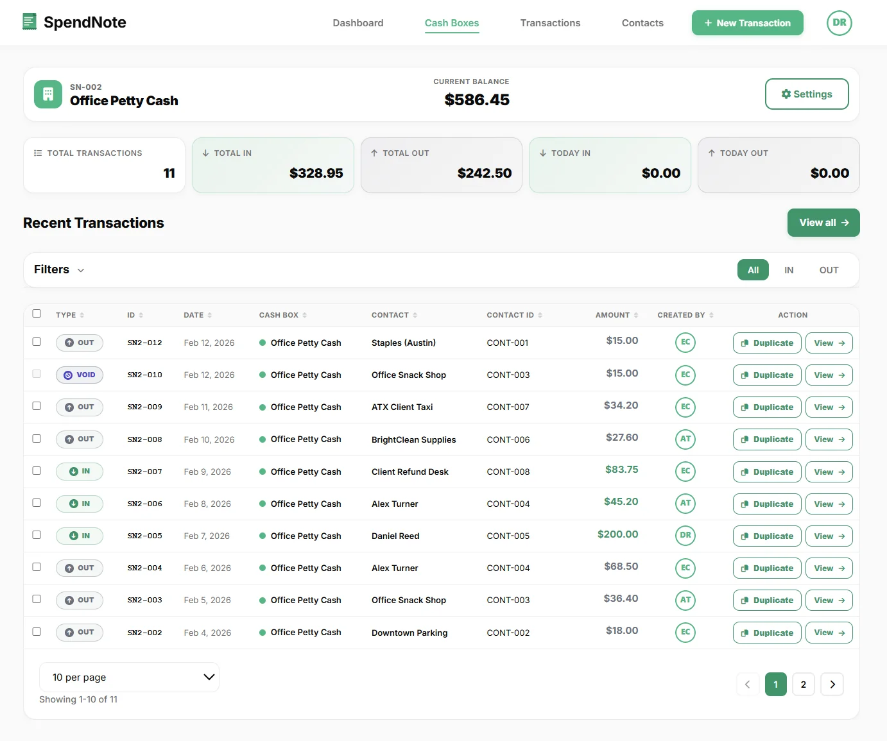

How to Track Who Is Holding Company Cash
Petty cash moves through multiple hands every week. Someone withdraws money for supplies. Someone collects fuel receipts. Someone replenishes the box. Without a shared log, the answer to “who has the cash right now?” is always a guess.
The fix is a real-time petty cash tracking system where every withdrawal is logged the moment it happens — with the holder’s name, the amount, a timestamp, and a purpose. The balance updates instantly, and anyone with access can see who has what without picking up the phone.
If you’re a small business owner frustrated by this lack of visibility, you’re not alone — most owners can’t see where their cash goes until something goes wrong.
Why You Lose Track of Petty Cash Holders
- Cash leaves no trace — unlike bank transfers, there's no automatic record
- Paper logs are always late — by the time someone writes it down, the details are gone
- Nobody owns the process — everyone assumes someone else is tracking it
- Problems show up too late — small gaps snowball into unexplained shortages

How to Track Who Has the Cash in Real Time
You don’t need accounting software for this. You need a real-time petty cash tracker that logs every movement the moment it happens — and generates a receipt every time.
That means:
- Every withdrawal logged with a name and timestamp
- Every expense recorded with the amount and purpose
- Every return or deposit tracked
- Running balances updated automatically
- The whole picture visible from your phone
See Where Your Cash Is — Right Now
SpendNote gives you real-time visibility into every cash box and every transaction. No spreadsheets, no guesswork.
Start Tracking Your CashFree to start. Plans from $15.83/month. No credit card required.
Who This Is For
Office Managers
You handle petty cash. Your boss asks for the balance — you don't have a clear answer.
Small Business Owners
You're not always on-site. You need to know where the cash is — without calling anyone. Open SpendNote in your browser, check the balance, done.
Field Operations
Construction sites, delivery crews, market stalls. Cash moves fast. Track it on the spot — from any device.
Anyone Managing Cash for Others
If someone gave you cash and expects you to account for it — this is how you prove where every penny went.
Office Cash Log: One Shared View for the Whole Team
Whether you call it the office cash log, the petty cash book, the cash box ledger, or just “the spreadsheet Carol updates on Fridays” — the goal is the same: one shared, always-current record of every cash movement, so nobody has to chase staff for missing slips at month-end.
SpendNote replaces the paper log, the envelope of crumpled receipts, and the tab-switching spreadsheet with one online cash log that everyone with access can read and update from any device. Same data, no “send me your version” emails.
- Office cash boxes — one log per box, balance updates after every transaction
- Cash drawers and tills — track shift handoffs, drops to safe, paid-outs to vendors
- Event cash floats — one log per booth or volunteer, close out at the end (paired with a cash box request form for the full request → handoff → return flow)
- Multi-location operators — see every location’s cash log from one dashboard
The log is searchable, exportable to PDF or CSV, and every entry carries the user name and timestamp. If a balance looks wrong, you can scroll back to find exactly when and why — instead of guessing or restarting the whole reconciliation.

Important: SpendNote is a cash tracking and receipt tool — not a payroll, tax, or accounting system. It does not replace formal financial reporting or regulatory compliance.
Frequently Asked Questions
How do I know who has our company cash right now?
Use a shared cash tracking system where every withdrawal and return is logged with the person's name and a timestamp. SpendNote shows real-time balances per cash box and attributes every transaction to a specific user — so you always know who has what.
Can I track cash across multiple locations?
Yes. SpendNote supports multiple cash boxes — one per location, project, or purpose. Each has its own balance and transaction history, visible from one dashboard.
What if someone forgets to log a transaction?
The balance will be wrong, and the discrepancy shows at reconciliation. The key is making logging fast — SpendNote takes about 30 seconds per transaction — so there is no reason to skip it.
Do I need accounting software to track cash?
No. SpendNote is not accounting software. It tracks cash movements and generates receipts as proof. No bookkeeper or accounting knowledge needed.